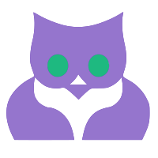

<mat-sidenav-container class="side-nav" fullscreen>
  <mat-sidenav mode="side" opened>
    <div class="sidenav-container">
      <div class="image-container">
        
      </div>     
      <ul class="navLinks" role="list">       
          <li *ngFor="let navLink of navLinks" (click)="activateClass(navLink)" routerLink="{{navLink.link}}" [ngClass]="{'active': navLink.active}" role="listitem"><i class="material-icons">{{navLink.icon}}</i>
            <p>{{navLink.name}}</p>
          </li>       
      </ul>
    </div>    
  </mat-sidenav>
  <mat-sidenav-content>
    <div class="container content-container">
      <div class="row">
        <div class="col-sm-12">
          <!--need a mobile nav in here at top that switches on or off-->
          <router-outlet></router-outlet>       
        </div>
      </div>
    </div>
  </mat-sidenav-content>
</mat-sidenav-container>